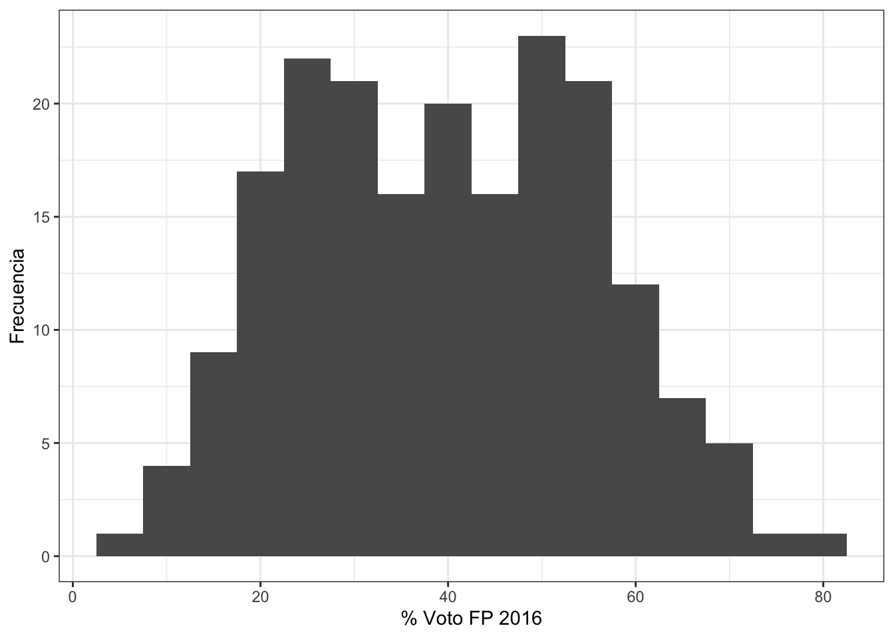
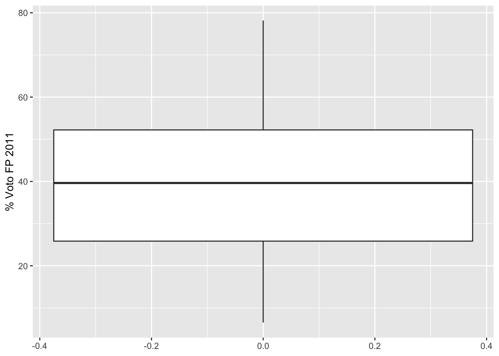
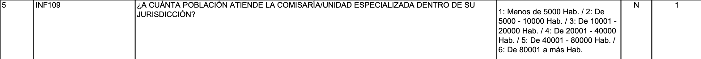
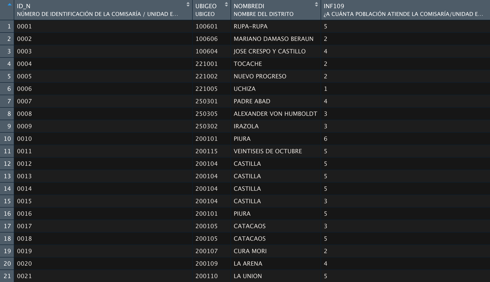
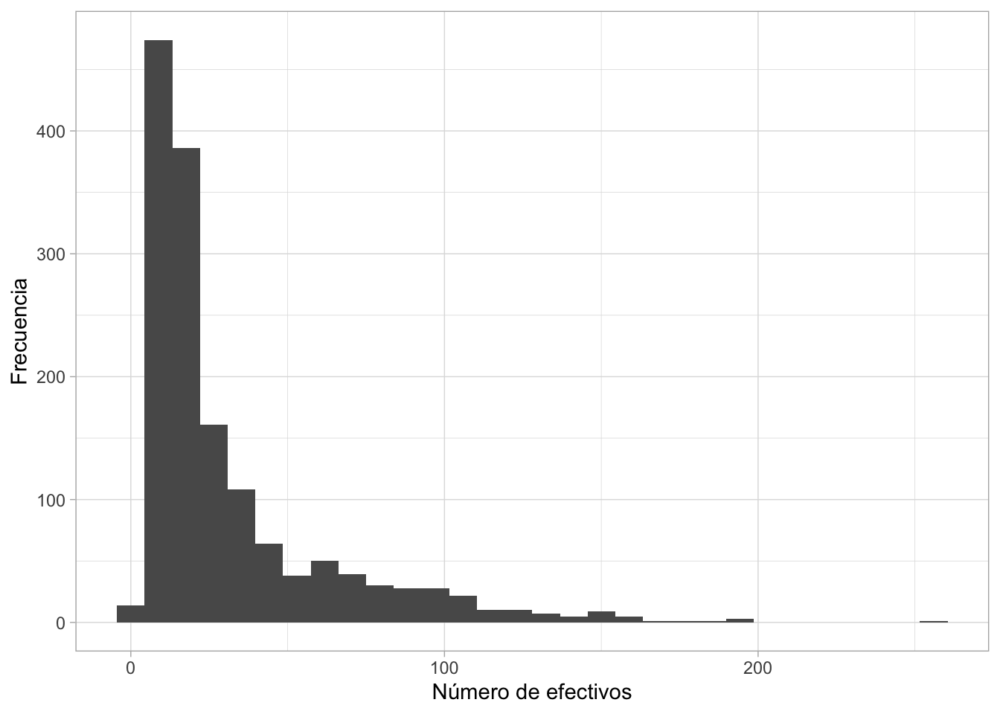
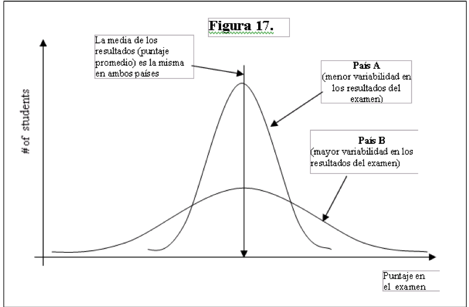
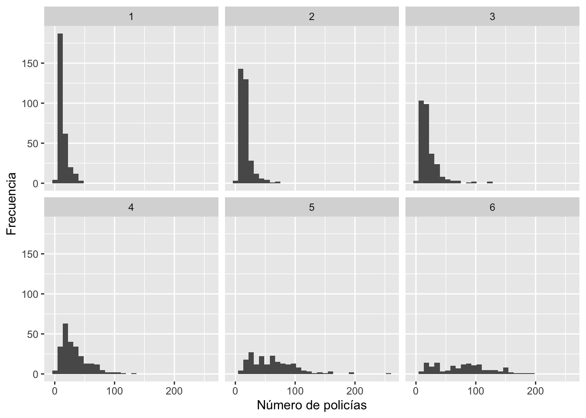
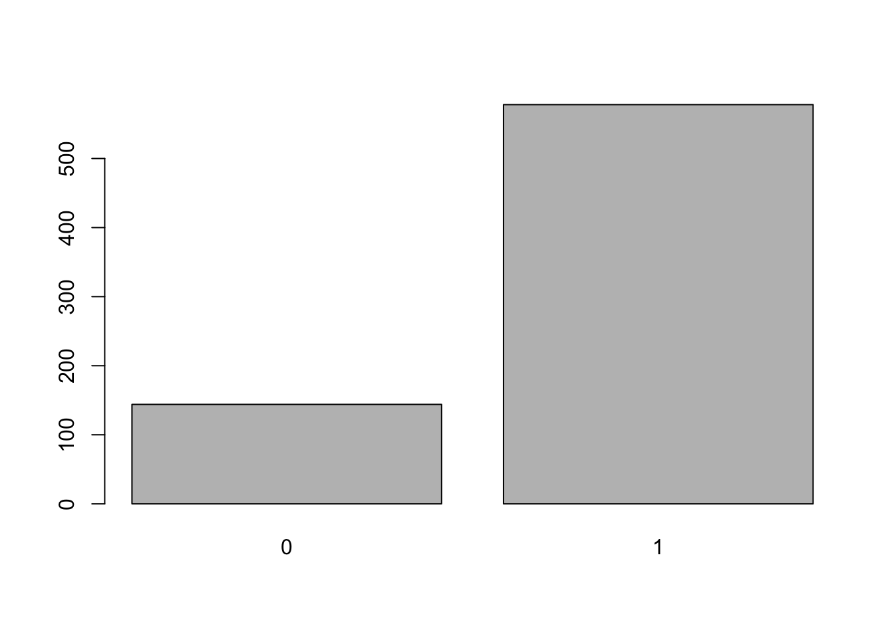
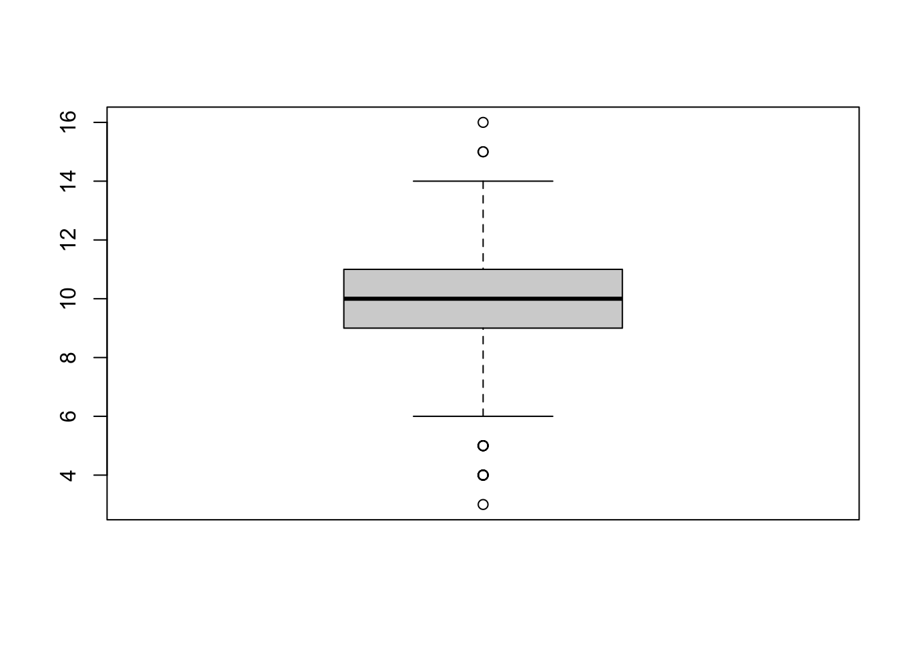
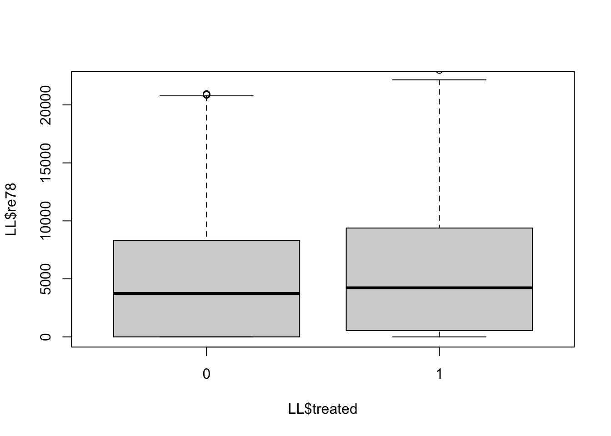

Leer una base de datos
Usamos la librería rio. Activamos la librería con el
comando library y usamos el comando import
para leer la base de datos (un archivo Excel). Ojo: el nombre del
archivo tiene que estar entre comillas. En este caso, el archivo está
dentro de mi directorio de trabajo, por lo que se le llama con el
nombre. Si no estuviera en el directorio de trabajo se tendría que
especificar la ruta del archivo.
Guardamos esta base de datos en un nuevo objeto (dataframe) llamado
res2016. Se sugiere siempre trabajar con nombres cortos de bases de
datos y de variables.
Van a poder escribir
library(rio)
res2016 = import("resultados2016.xlsx")
Si se hace doble click en el objeto, se abre la base de datos como
una pestaña en la zona de scripts / RMarkdowns. Este objeto dataframe
tiene vectores de datos de tipo “caracter” y otros vectores de datos de
tipo “numérico”.
Descripción
Usamos las medidas de tendencia central para describir una variable
numérica. Podemos usar el comando mean para calcular el
promedio de voto provincial a Fuerza Popular en 2016 (39.5%). Este
comando asume que se tienen datos completos. Si existiera un dato
perdido, el comando no correría, y se tendría que añadir la
especificación , na.rm = T. También se puede calcular la
mediana, con el comando median.
Se observa que ambas medidas son aproximadamente iguales, indicando
una distribución simétrica de datos.
library(dplyr)
library(tidyverse)
res2016 |>
summarise(mean(fp))
## mean(fp)
## 1 39.52934
#mean(res2016$fp)
#median(res2016$fp)
También se puede calcular la media para grupos de observaciones, es
decir para filas específicas de una base de datos. Por ejemplo, si
quisiéramos saber si el voto en las provincias de Lima fue mayor o menor
que el voto provincial general de Fuerza Popular, podríamos calcular la
media del voto provincial solo en las provincias de Lima.
Esto se puede hacer de múltiples maneras. En este curso comenzaremos
a usar las funciones del mundo del Tidyverse.
En cualquier caso, se tiene que seleccionar algunas filas de un
dataframe usando operadores lógicos. En R tenemos los siguientes
operadores lógicos:
| == |
es igual a |
| != |
es diferente de |
| > |
es mayor de |
| < |
es menor de |
| >= |
es mayor o igual a |
| <= |
es menor o igual a |
| & |
intersección (Y) |
| | |
unión (O) |
En nuestro caso vamos a seleccionar las observaciones que en el
vector o variable “dpto” sean igual a “LIMA”. Ojo, en mayúsculas, dado
que así está en la base de datos y entre comillas porque es una cadena
de caracteres.
res2016 |>
filter(dpto =="CUSCO") |>
summarise(mean(fa))
## mean(fa)
## 1 55.17385
# mean(res2016$fp[res2016$dpto =="LIMA"])
#Cómo hallarían el promedio del voto a FP en las provincias de Amazonas usando la variable "id"?
Encontramos que en Lima el promedio provincial de voto a Fuerza
Popular es mayor que el promedio provincial general.
Para el caso de la votación al Frente Amplio, calculamos la media y
la mediana, otra medida de tendencia central. Se observa que la media es
mayor que la mediana. Esto indica una distribución asimétrica de los
datos. Para ver esta asimetría se puede graficar la distribución de
frecuencias de esta variable con un histograma (más adelante).
res2016 |>
summarize(mean(ppk), median(ppk))
## mean(ppk) median(ppk)
## 1 13.00087 9.65
res2016 |>
filter(dpto =="CUSCO") |>
summarize(mean(fa), median(fa))
## mean(fa) median(fa)
## 1 55.17385 53.18
# mean(res2016$fa[res2016$dpto =="CUSCO"])
#Cómo calcularían esta media usando la variable "id"?
Para describir variables que no son numéricas, podemos producir
tablas de distribución de frecuencias. Por ejemplo, la base de datos
incluye una variable de qué partido ganó la mayoría de votos en una
provincia. La variable “gana” de la base de datos recoge este dato.
Podemos usar el comando count para calcular la tabla de
distribución de frecuencias de esta variable. Se guarda esta tabla en un
objeto “tabla”.
Se encuentra que del total de provincias, Fuerza Popular ganó en la
mayoría de ellas.
tabla = res2016 |>
count(Ganador = gana, name="Frecuencia")
tabla
## Ganador Frecuencia
## 1 DEMOCRACIA DIRECTA 10
## 2 FRENTE AMPLIO 69
## 3 FUERZA POPULAR 112
## 4 PERÚ POSIBLE 2
## 5 PPK 3
#table(res2016$gana)
Para calcular los porcentajes, se puede agregar a la tabla una
columna “Porcentaje” con el cálculo de la “Frecuencia” (columna
existente) ente la suma total de las frecuencias. Se encuentra que
Fuerza Popular ganó en el 57% de provincias del Perú.
tabla = tabla |>
mutate(Porcentaje = (Frecuencia / sum(Frecuencia)*100 ))
tabla
## Ganador Frecuencia Porcentaje
## 1 DEMOCRACIA DIRECTA 10 5.102041
## 2 FRENTE AMPLIO 69 35.204082
## 3 FUERZA POPULAR 112 57.142857
## 4 PERÚ POSIBLE 2 1.020408
## 5 PPK 3 1.530612
#prop.table(table(res2016$gana))*100
#round(prop.table(table(res2016$gana))*100, 1)
Pregunta: ¿qué medidas de tendencia central (media, mediana,
moda) aplican a qué tipo de variables?
Visualización
Una de las tareas más comunes en el manejo de datos es la
visualización de los resultados. En R hay dos maneras de proceder. La
primera es usar los comandos de base de R. La otra es usar una librería
ggplot2 que permite una mayor flexibilidad en la producción
y estética de los gráficos.
Para esto se carga la librería ggplot2. Esta tiene un
comando ggplot en el que se define los aspectos del
gráfico. Por ejemplo, para graficar una variable numérica, como el
porcentaje de voto a FP por provincia, se puede producir un
histograma.
Dentro de este comando se define la base de datos y la variable que
se va a graficar. Luego se van agregando capas. La primera define el
tipo de gráfico. Usamos geom_histogram para producir el
histograma y se especifica el ancho de columna. Luego se define las
etiquetas de ejes y el tema del gráfico.
Se observa que el gráfico de porcentaje de votos a Fuerza Popular es
aproximadamente simétrico, tal como indicaban la similitud entre media y
mediana.
library(ggplot2)
ggplot(res2016, aes(x=fp))+
geom_histogram(binwidth = 5)+
xlab("% Voto PPK 2016") +
ylab("Frecuencia")+
theme_minimal()

Habíamos encontrado que la media y la mediana del porcentaje de voto
al Frente Amplio diferían. Esto lo comprobamos produciendo el histograma
de esta variable.
ggplot(res2016, aes(x=fa))+
geom_histogram(binwidth = 5)+
geom_vline(xintercept = 29.3, color = "red")+
geom_vline(xintercept = 24.5, color = "green")+
xlab("% Voto FA 2011")+
ylab("Frecuencia")+
theme_classic()

Otro gráfico útil en la visualización es el llamado “boxplot” o
“gráfico de cajas”. Este tipo de gráficos sirve bastante para comparar
entre grupos de otra variable.
Para producir un gráfico de cajas usamos la especificación
geom_bloxplot() y podemos definir los límites y saltos del
eje Y. Este gráfico nos muestra que el distrito con el menor porcentaje
de voto a FP tuvo un poco más de 5% y que el máximo fue de casi 80%.
También muestra que la votación mediana fue de 40%. Los límites de la
caja son el cuartil 25 y el cuartil 75.
ggplot(res2016, aes(y=fp))+
geom_boxplot()+
ylab("% Voto FP 2011")

El aspecto más útil de los gráficos de cajas es la comparación. Por
ejemplo, si se quisiera comparar el voto a Fuerza Popular entre
departamentos del país. Para hacer esto se debe definir que la variable
en el eje Y sea el porcentaje de votos a Fuerza Popular “fp” y en el eje
X la variable que define los departamentos “dpto”. Incluimos la
especificación coord_flip() para voltear los ejes y que las
etiquetas de los departamentos se lean más claramente.
En el gráfico se pueden hacer varias comparaciones. Lo más importante
es comparar medianas y anchos de cajas entre departamentos. Los puntos
aislados son “outliers” o valores extremos, que se calculan
automáticamente y se grafican.
Este gráfico, sin embargo, es muy desagragado.
ggplot(res2016, aes(y=fp, x=dpto))+
geom_boxplot()+
scale_y_continuous(limits = c(0, 100), breaks = seq(0, 100, 10))+
ylab("% Voto FP 2011")+
xlab("Departamento")+
theme_minimal()+
coord_flip()

Si se quisiera comparar entre regiones (costa, sierre y selva), se
tendría que crear esta variable, a partir de la variable “dpto”.
Para graficar una variable de tipo cualitativa (o de factor en el
lenguaje de R), se debe usar, por ejemplo, un gráfico de barras. Podemos
graficar el porcentaje de provincias que cada partido ganó en 2021.
Para esto seguimos usando la librería ggplot, pero ahora
no realizaremos un histograma (no usaremos geom_histogram),
sino barras, con geom_bar. Dentro de este comando se añade
stat="identity para indicar que R no calcule nada y solo
use los datos de “tabla”.
ggplot(tabla, aes(x=Porcentaje,y=Ganador))+
geom_bar(stat="identity", width=0.5)
Recodificando variables
res2016 = res2016 |>
mutate(region = case_when(
dpto=="AMAZONAS"~"Selva",
dpto=="ANCASH"~"Sierra",
dpto=="APURIMAC"~"Sierra",
dpto=="AREQUIPA"~"Sierra",
dpto=="AYACUCHO"~"Sierra",
dpto=="CAJAMARCA"~"Sierra",
dpto=="CUSCO"~"Sierra",
dpto=="CALLAO"~"Costa",
dpto=="HUANCAVELICA"~"Sierra",
dpto=="HUANUCO"~"Selva",
dpto=="ICA"~"Costa",
dpto=="JUNIN"~"Sierra",
dpto=="LA LIBERTAD"~"Costa",
dpto=="LAMBAYEQUE"~"Costa",
dpto=="LIMA"~"Costa",
dpto=="LORETO"~"Selva",
dpto=="MADRE DE DIOS"~"Selva",
dpto=="MOQUEGUA"~"Costa",
dpto=="PASCO"~"Sierra",
dpto=="PIURA"~"Costa",
dpto=="PUNO"~"Sierra",
dpto=="SAN MARTIN"~"Selva",
dpto=="TACNA"~"Costa",
dpto=="TUMBES"~"Costa",
dpto=="UCAYALI"~"Selva"
))
#library(car)
#res2016$region = car::recode(res2016$dpto, "'AMAZONAS'=3; 'ANCASH'=2;
# 'APURIMAC'=2;'AREQUIPA'=2;
# 'AYACUCHO'=2; 'CAJAMARCA'=2;
# 'CUSCO'=2; 'CALLAO'=1;
# 'HUANCAVELICA'=2;'HUANUCO'=3;
# 'ICA'=1; 'JUNIN'=2;
# 'LA LIBERTAD'=1; 'LAMBAYEQUE'=1;
# 'LIMA'=1; 'LORETO'=3;
# 'MADRE DE DIOS'=3;
# 'MOQUEGUA'=1; 'PASCO'=2; 'PIURA'=1;
# 'PUNO'=2; 'SAN MARTIN'=3;
# 'TACNA'=1;'TUMBES'=1;
# 'UCAYALI'=3")
# table(res2016$region)
res2016 |>
count(Region = region, name="Frecuencia")
## Region Frecuencia
## 1 Costa 49
## 2 Selva 43
## 3 Sierra 104
La variable creada es una variable de tipo “caracter”. En R existe
otro tipo de variable llamado “factor”. Podemos convertir cualquier
variable a una de factor y etiquetar cada valor.
library(forcats)
res2016 = res2016 |>
mutate(region2 = factor(region))
#res2016$region2 = as.factor(res2016$region)
#levels(res2016$region2) = c("Costa", "Sierra", "Selva")
#table(res2016$region2)
Ahora, procedemos a producir el gráfico de cajas de porcentaje de
voto a Fuerza Popular por región.
ggplot(res2016, aes(y=fp, x=region))+
geom_boxplot()+
scale_y_continuous(limits = c(0, 100), breaks = seq(0, 100, 20))+
ylab("% Voto FP 2016")+
xlab("Región")+
theme_get()

Se observa en este gráfico que el voto mediano a Fuerza Popular fue
mayor entre provincias de la costa, seguido por la selva y luego la
sierra. Este mismo patrón se observa si calculáramos la media del
porcentaje de voto provincial a Fuerza Popular por región.
res2016 |>
group_by(region2) |>
summarise(mean(fp), sd(fp))
## # A tibble: 3 × 3
## region2 `mean(fp)` `sd(fp)`
## <fct> <dbl> <dbl>
## 1 Costa 49.6 13.6
## 2 Selva 45.0 13.6
## 3 Sierra 32.5 14.0
#mean(res2016$fp2011[res2016$region==1])
#mean(res2016$fp2011[res2016$region==2])
#mean(res2016$fp2011[res2016$region==3])
Medidas de posición
La mediana es un caso particular de las medidas de posición. Este
estadístico divide una distribución ordenada de datos en dos mitades y
la mediana es el punto limítrofe entre estos dos grupos.
De la misma manera, los cuartiles dividen una distribución ordenada
en 4 partes iguales, y los cuartiles son los valores de los puntos
limítrofes. El gráfico de cajas muestra estos cuartiles, que incluye la
mediana.
Para calcular los cuartiles de la distribución general del voto a
Fuerza Popular en 2016, se puede usar el comando summarise
y el estadístico quantile del Tidyverse. Estos comandos
también nos retornan el mínimo y máximo.
res2016 |>
summarise(Cuartiles = quantile(fp))
## Warning: Returning more (or less) than 1 row per
## `summarise()` group was deprecated in
## dplyr 1.1.0.
## ℹ Please use `reframe()` instead.
## ℹ When switching from `summarise()` to
## `reframe()`, remember that `reframe()`
## always returns an ungrouped data frame
## and adjust accordingly.
## Call
## `lifecycle::last_lifecycle_warnings()`
## to see where this warning was generated.
## Cuartiles
## 1 6.5400
## 2 25.8475
## 3 39.6300
## 4 52.2175
## 5 78.1600
Para calcular los cuartiles del voto a Fuerza Popular en el 2011 por
regiones.
cuartilesxregion = res2016 |>
group_by(region2) |>
summarise(quantile(fp))
## Warning: Returning more (or less) than 1 row per
## `summarise()` group was deprecated in
## dplyr 1.1.0.
## ℹ Please use `reframe()` instead.
## ℹ When switching from `summarise()` to
## `reframe()`, remember that `reframe()`
## always returns an ungrouped data frame
## and adjust accordingly.
## Call
## `lifecycle::last_lifecycle_warnings()`
## to see where this warning was generated.
## `summarise()` has grouped output by
## 'region2'. You can override using the
## `.groups` argument.
cuartilesxregion
## # A tibble: 15 × 2
## # Groups: region2 [3]
## region2 `quantile(fp)`
## <fct> <dbl>
## 1 Costa 20.9
## 2 Costa 42.8
## 3 Costa 52.4
## 4 Costa 57.4
## 5 Costa 78.2
## 6 Selva 15.4
## 7 Selva 39.1
## 8 Selva 45.2
## 9 Selva 52.8
## 10 Selva 74.4
## 11 Sierra 6.54
## 12 Sierra 22.9
## 13 Sierra 30.1
## 14 Sierra 40.6
## 15 Sierra 69.9
#Para ver los cuartiles por cada región en forma horizontal
#cuartilesxregion = res2016 |>
# group_by(region2) |>
# summarise(c = list(quantile(fp))) |>
# unnest_wider(c)
#IQR(res2016$fp2011[res2016$region==1])
#IQR(res2016$fp2011[res2016$region==2])
#IQR(res2016$fp2011[res2016$region==3])
Describiendo la heterogeneidad
El gráfico de cajas también muestra una medida de heterogeneidad: la
amplitud de la caja o llamado rango intercuartil. Mientras más amplia la
caja, mayor será la heterogeneidad de los datos, es decir, habrá mayor
diferencias entre ellos. Mientras más estrecha la caja, más
homogeneidad, es decir, los datos se parecerán más entre ellos. Si la
caja no tiene amplitud (es decir, es una línea), los datos son
completamente homogéneos, es decir, todos iguales.
Formalmente, la amplitud de la caja es la diferencia entre el cuartil
75 y el cuartil 25. Se puede crear una nueva tabla “ricxregion” con este
cálculo.
ricxregion = res2016 |>
group_by(region2) |>
summarise(IQR(fp))
ricxregion
## # A tibble: 3 × 2
## region2 `IQR(fp)`
## <fct> <dbl>
## 1 Costa 14.6
## 2 Selva 13.6
## 3 Sierra 17.7
En el gráfico de cajas anterior, se puede decir que el porcentaje de
voto provincial a Fuerza Popular es más homogéneo en la selva y más
heterogéneo en la sierra.
Otra forma de medir la homogeneidad o heterogeneidad de los datos
para una variable numérica es mediante la desviación estándar. Se puede
calcular la desviación estándar de un conjunto de datos numéricos con la
función sd. Por ejemplo, para calcular la desviación
estándar del voto provincial a Fuerza Popular por región.
res2016 |>
group_by(region2) |>
summarise(sd(fp))
## # A tibble: 3 × 2
## region2 `sd(fp)`
## <fct> <dbl>
## 1 Costa 13.6
## 2 Selva 13.6
## 3 Sierra 14.0
#sd(res2016$fp[res2016$region==1])
#sd(res2016$fp[res2016$region==2])
#sd(res2016$fp[res2016$region==3])
Encontramos que la región con menor heterogeneidad es la costa,
aunque, según esta medida, la región más heterogénea es la selva. Esto
puede ser debido a la presencia de valores atípicos.
Medidas de tendencia central
Resumen de un conjunto de datos.
Se resume mediante un valor “representativo”.
Cada observación se puede comparar con este valor de resumen. Se
puede estar por debajo o por encima de este valor.
Moda
Valor mas frecuente de un conjunto de datos
Es apropiada para todo tipo de datos
Se puede observar directamente en una tabla de distribución de
frecuencias.
Por ejemplo si se mide en cada comisaria del Perú, a cuánta población
atiende cada comisaria de acuerdo a la codificación.

La base de datos o “dataframe” se vería así

Para esta clase se usará la base de datos de comisarias del Perú, que
puede ser descargada de la sección microdatos de la web del INEI (ver aquí). Esta base tiene
información para 1495 comisarias y de 281 variables. Esta base se puede
cargar también desde el repositorio Github de este curso. La base de
datos puede ser guardada en el directorio de trabajo.
En primer lugar, se llama a la librería “rio” y se usa el comando
import que permite leer bases de datos en muchos
formatos.
library(rio)
comi17 = import("bases/comi2017.sav")
Esta base de datos incluye a la variable “INF109” (ojo: R es “case
sensitive”, es decir, diferencia mayúsculas de minúsculas). La tabla de
distribución de frecuencias de esa variable se puede obtener con el
comando table.
table(comi17$INF109)
##
## 1 2 3 4 5 6
## 288 329 290 248 196 144
En este caso, la moda es el valor más frecuente, que sería el código
“2”, que significa “De 5,000 a 10,000 hab”.
Resumen
| Moda |
Sí |
Sí |
Sí |
| Mediana |
No |
Sí |
Sí |
| Media |
No |
No |
Sí |
Moda aplica para cualquier tipo de variable, pero menos
útil.
Media aplica solo para variables numéricas, pero más
útil.
Ejemplo
¿Cuál es la media (o el promedio) de policías por comisaria de
acuerdo a estos datos?
mean(comi17$INF110_TOT)
## [1] 31.61538
¿Es una representación adecuada de la realidad? Podemos fijarnos en
el gráfico de distribución de esta variable para ver si se tiene
comisarias que son “atípicas” de la distribución general.
Esto se puede hacer presentando el histograma de esta variable, que
es como un gráfico de barras de una variable numérica.
hist(comi17$INF110_TOT, breaks=20)

¿Qué se puede concluir del gráfico?
median(comi17$INF110_TOT)
## [1] 19
¿Qué significa esta diferencia entre la media de 31.6 y la mediana de
19?
summary(comi17$INF110_TOT)
## Min. 1st Qu. Median Mean 3rd Qu. Max.
## 3.00 11.00 19.00 31.62 37.00 259.00
¿Qué se puede comentar de estos datos?
Medidas de dispersión
Describir la centralidad no es suficiente. Dos distribuciones
pueden tener la misma medida de tendencia central, pero diferentes
realidades.
Ejemplo: distribución de puntaje en área matemática de prueba
PISA aplicada en 2 países pueden tener la misma media, pero diferente
variación.
¿Cómo describiría las diferencias entre en los puntajes de la
prueba el País A y el País B?

Rango
Diferencia entre el valor máximo y el mínimo. En ejemplo de
policías: 259-3 = 256. Es la diferencia entre la comisaría con más
efectivos y la comisaría con menor número de efectivos.
No un una medida muy útil.
Rango intercuartil
- Se verá cuando se vean percentiles.
Desviación estándar
Cada observación está a una “distancia” de la media. Esta
distancia se llama desviación \((x_i-\bar{x})\)
Observaciones por encima de la media tendrán desviaciones
positivas. Observaciones por debajo de la media tendrán desviaciones
negativas.
No se puede calcular un promedio de desviaciones porque valores
positivos se cancelan con negativos.
Se eleva al cuadrado las observaciones para que todas sean
positivas. Se promedian esas desviaciones al cuadrado.
La desviación estándar es la raíz cuadrada de ese promedio de
desviaciones al cuadrado.
Se divide entre n-1 por un tema técnico.
\[
\sum \frac{(x_i-\bar{x})^2} {n-1}
\]
Para ver un cálculo básico de la desviación estándar en Excel, puede
entrar aquí.
- Como se observa en el gráfico anterior, la desviación estándar es
más útil cuando se comparar dos distribuciones. Se compara la
centralidad y la dispersión de una variable entre dos grupos (o dos
distribuciones).
Ejemplo
Siguiendo con la base de datos de comisarías del Perú, queremos
evaluar si el número de policías (INF110_TOT) aumenta a medida que la
comisaría atienda a una población mayor (INF109).
Como se vio antes, la variable de población a la que atiende está
codificada en 6 grupos, desde 1 que significa “Menos de 5000 hab” a 6
que significa “De 80000 a más hab”.
table(comi17$INF109)
##
## 1 2 3 4 5 6
## 288 329 290 248 196 144
Lo que se quiere calcular es el promedio y la desviación estándar de
policías por cada grupo de población a la que atiende. Esta operación se
puede hacer de múltiples maneras en R. Aquí usaremos primero los
[…] para indicar un subgrupo del que se quiere calcular
alguna operación.
mean(comi17$INF110_TOT[comi17$INF109==1])
## [1] 13.40278
mean(comi17$INF110_TOT[comi17$INF109==2])
## [1] 16.31915
mean(comi17$INF110_TOT[comi17$INF109==3])
## [1] 20.95517
mean(comi17$INF110_TOT[comi17$INF109==4])
## [1] 33.2379
mean(comi17$INF110_TOT[comi17$INF109==5])
## [1] 62.76531
mean(comi17$INF110_TOT[comi17$INF109==6])
## [1] 79.26389
Efectivamente, como se esperaba, el número promedio de policías
aumenta a medida que la comisaría atiende a una población mayor.
También se puede comparar la desviación estándar en cada grupo. El
comando para el cálculo de la desviación estándar es
sd.
sd(comi17$INF110_TOT[comi17$INF109==1])
## [1] 7.752998
sd(comi17$INF110_TOT[comi17$INF109==2])
## [1] 10.17162
sd(comi17$INF110_TOT[comi17$INF109==3])
## [1] 16.62433
sd(comi17$INF110_TOT[comi17$INF109==4])
## [1] 22.70591
sd(comi17$INF110_TOT[comi17$INF109==5])
## [1] 38.48164
sd(comi17$INF110_TOT[comi17$INF109==6])
## [1] 44.00047
La desviación estándar también aumenta a medida que las comisarías
atienden a una población mayor. Es decir, las comisarías que atienden a
una población pequeña son más homogéneas que las que atienden a una
población mayor, donde hay mayores diferencias en el número de efectivos
entre comisarías.
¿A qué puede deberse este resultado? Una posible explicación es la
complejidad de ciudades más grandes, por lo que podría requerir
comisarias especializadas, además de las comisarias estándar. Por el
contrario, centros urbanos más pequeños solo requerirían comisarías
pequeñas.
En R hay diferentes maneras de hacer lo mismo. Para los gráficos
existe una librería especializada llamada ggplot2. Con esa
librería se tiene más opciones gráficas que con los comandos de base.
También existe una forma de codificación llamado tidyverse
que usa el operador %>%. Aquí se presenta un ejemplo que
produce el histograma del número de policías por cada grupo de tamaño de
población.
library(ggplot2)
library(dplyr)
comi17 %>%
ggplot(aes(x=INF110_TOT))+
geom_histogram()+
facet_wrap(~INF109)+
xlab("Número de policías")+
ylab("Frecuencia")
## `stat_bin()` using `bins = 30`. Pick
## better value with `binwidth`.

¿Qué otras preguntas se pueden responder con los datos de
comisarías?
Paper práctico
“Evaluating the Econometric Evaluations of Training Programs with
Experimental Data” (LaLonde 1986)
Pregunta: ¿tiene un efecto los programas de entrenamiento en la
empleabilidad?
Supuesto: entrenando a trabajadores que no tienen las habilidades
básicas hará que se muevan en el mercado laboral, dándoles experiencia
laboral y consejería. Se trata de un programa estatal que garantiza un
trabajo entre 9 a 18 meses. Luego de este periodo eran forzados a
encontrar un trabajo regular.
Metodología: evaluación experimental. Un grupo fue parte del
programa. Otro grupo comparable no fue parte del programa. Se recolectó
una línea de base con información de ingresos y datos sociodemográficos.
Luego se hizo recojo de información de seguimiento.
Variable de éxito: cambio en los ingresos.
Leyendo la base de datos en R
library(rio)
LL <- import("bases/LL.csv")
Variables en la base de datos
- treated: variable dummy si el participante recibió el tratamiento
(1) o no (0)
- age: edad
- education: años de educación
- black: variable dummy si el participante es Afroamericano
- married: variable dummy si el participante es casado
- nodegree: variable dummy de no tener estudios secundarios completos
(high school)
- re74: ingresos reales en 1974
- re75: ingresos reales en 1975
- re78: ingresos reales en 1978
- hispanic: variable dummy si el participantes es hispano
- u74: variable dummy si era desempleado en 1974
- u75: variable dummy si era desempleado en 1975
Medidas de tendencia central
Resumen de una variable
Si se quisiera ver la media y la mediana con un solo comando, se
puede usar summary.
summary(LL$re74)
## Min. 1st Qu. Median Mean 3rd Qu. Max.
## 0.0 0.0 823.8 3630.7 5211.8 39570.7
Se observa claramente que la media es mucho mayor que la mediana.
¿Qué significa que el Min=0? ¿Qué significa 1st Qu = 0? ¿Median a qué
porcentaje corresponde? ¿3rd Qu a qué porcentaje corresponde? ¿Qué
significa Max? ¿Máximo observado puede ser atípico?
Para observar la posición relativa de media y mediana, se puede
graficar el histograma marcando ambas medidas.
hist(LL$re74, breaks = 15)
abline(v=mean(LL$re74), col="red")
abline(v=median(LL$re74), col="blue")
Con el comando summary se puede ver que la mediana
aparece como un caso particular de los cuartiles, una medida de
posición.
Medidas de posición
Los cuartiles dividen a la distribución en cuatro grupos de igual
tamaño. Así como la mediana divide a la “fila ordenada” en 2 grupos,
cada uno con 411 observaciones, los cuartiles dividen la distribución en
4 grupos, cada uno con el 25% del total de observaciones (180.5
observaciones).
Los cuartiles son las medidas de posición más usadas, pues tienen una
expresión gráfica en el “boxplot”. Sin embargo, una distribución
ordenada se puede dividir en tres grupos iguales, los “terciles”. Por
ejemplo, en la universidad, a los alumnos se los clasifica en tercio
superior, tercio medio y tercio inferior.
Una distribución ordenada también puede ser dividida en cinco grupos,
los “quintiles” o en diez grupos iguales, los “deciles”.
quantile(LL$re74)
## 0% 25% 50% 75% 100%
## 0.0000 0.0000 823.8215 5211.7946 39570.6797
quantile(LL$re74, c(0,.1,.2,.3,.4,.5,.6,.7,.8,.9,1))
## 0% 10% 20% 30% 40% 50% 60%
## 0.0000 0.0000 0.0000 0.0000 0.0000 823.8215 1837.2208
## 70% 80% 90% 100%
## 3343.5705 6651.6747 10393.2177 39570.6797
Gráfico de cajas
Una forma de graficar los cuartiles es mediante el gráfico de cajas o
boxplot (ver ppt). Este gráfico muestra una caja central y dos bigotes.
El gráfico para la variable ingresos de la línea de base es:
boxplot(LL$re74)
¿Por qué no se muestra el bigote inferior? ¿Qué significan los puntos
superiores?
Tablas de frecuencias
El ingreso descrito anteriormente es para toda la muestra. El
estudio, sin embargo, dividió a los participantes en 2 grupos: tratados
y control. ¿Cuántos hay en cada grupo?
table(LL$treated)
##
## 0 1
## 425 297
La línea de base también recogió información sociodemográfica de los
participantes. En particular, nos interesa saber cuántos afroamericanos
hay en el grupo.
table(LL$black)
##
## 0 1
## 144 578
barplot(table(LL$black))

Y sobre todo saber qué nivel educativo tienen.
table(LL$education)
##
## 3 4 5 6 7 8 9 10 11 12 13 14 15 16
## 1 6 5 7 15 62 110 162 195 122 23 11 2 1
Las frecuencias absolutas no nos ayudan mucho, es mejor tener las
frecuencias relativas.
table(LL$education)/sum(table(LL$education))*100
##
## 3 4 5 6 7 8 9
## 0.1385042 0.8310249 0.6925208 0.9695291 2.0775623 8.5872576 15.2354571
## 10 11 12 13 14 15 16
## 22.4376731 27.0083102 16.8975069 3.1855956 1.5235457 0.2770083 0.1385042
O, se puede usar el comando prop.table que nos da la
proporción (en escala 0-1). Para reportar el porcentaje se multiplica
por 100.
prop.table(table(LL$education))*100
##
## 3 4 5 6 7 8 9
## 0.1385042 0.8310249 0.6925208 0.9695291 2.0775623 8.5872576 15.2354571
## 10 11 12 13 14 15 16
## 22.4376731 27.0083102 16.8975069 3.1855956 1.5235457 0.2770083 0.1385042
Esta variable se podría considerar como numérica, por lo que se
podría describir.
summary(LL$education)
## Min. 1st Qu. Median Mean 3rd Qu. Max.
## 3.00 9.00 10.00 10.27 11.00 16.00
Y se podría graficar
boxplot(LL$education)

O con un histograma (un gráfico de barras de una variable
numérica).
hist(LL$education)
O mediante
barplot(table(LL$education),xlab="Años de educación",ylab="Frecuencia",cex.axis=1,cex.names=0.8,ylim=c(0,200))
abline(h=0,col='gray60')
box()

Medidas de dispersión
Rango intercuartil
Distancia entre Q3 y Q1, que acumula el 50% de los datos
centrales.
IQR(LL$re74)
## [1] 5211.795
Para una variable numérica, la medida más usada es la desviación
estándar.
sd(LL$re74)
## [1] 6220.637
RETO: Calcule una medida de dispersión basada en la mediana
Inspeccionando la hipótesis de LaLonde
Hasta ahora se ha calculado la media de ingresos para el total de los
participantes del estudio en 1974. La idea es analizar cómo cambiaron
estos ingresos entre 1974 y 1978 para cada grupo. Para empezar, ¿cómo
eran los ingresos de los participantes que fueron tratados y que fueron
al grupo control al inicio del estudio? Para esto se tiene que calcular
la media para cada uno de estos grupos. Hay varias maneras de hacer
esto. Una es usando los []
mean(LL$re74[LL$treated==0])
## [1] 3672.485
sd(LL$re74[LL$treated==0])
## [1] 6521.526
mean(LL$re74[LL$treated==1])
## [1] 3570.999
sd(LL$re74[LL$treated==1])
## [1] 5773.134
Otra opción es creando otros “dataframes” para cada grupo con el
comando subset.
trata <- subset(LL, LL$treated==1)
control <- subset(LL, LL$treated==0)
Y en cada subgrupo calcular la media. En este caso calcularemos la
media en 1978 para ver si se generaron diferencias.
mean(control$re78)
## [1] 5090.048
sd(control$re78)
## [1] 5718.089
mean(trata$re78)
## [1] 5976.352
sd(trata$re78)
## [1] 6923.796
A simple vista, ¿se cumple la hipótesis de LaLonde? ¿Cuánto
aumentaron los ingresos de los que no formaron parte del programa y
cuánto aumentaron los ingresos de los que sí formaron parte del
programa?
¿Con esta información es suficiente para concluir que se cumple la
hipótesis de LaLonde?
Es posible que la media sea mayor en el grupo de tratamiento debido a
los valores extremos o “outliers”. Para verificar que el grupo de
tratamiento reporta un ingreso mayor que el grupo control, se puede
verificar mediante la mediana.
Para comparar visualmente, los ingresos en 1978 entre los
participantes en el grupo control y en el de tratamiento, se puede hacer
un gráfico de cajas comparada, que incluye la mediana.
Este gráfico se puede hacer con el comando boxplot,
incluyendo ambas variables en la definición.
boxplot(LL$re78 ~ LL$treated, ylim=c(0, 24000))

Este gráfico no se muestra claramente las diferencias entre los
valores de la mediana. Cuando se calculan, se observa que el grupo de
tratamiento tiene una mediana de ingresos más alta que el grupo
control.
median(control$re78)
## [1] 3746.701
median(trata$re78)
## [1] 4232.309
Esta diferencia a a favor de aquellos que pasaron el programa de
capacitación en sus ingresos posteriores puede deberse a múltiples
factores. Sin embargo, es apresurado sacar una conclusión de las
diferencias puntuales en las medias o las medianas. Al final, no se
tiene información de toda la población, sino simplemente de una muestra
de 722 personas.
La pregunta es: ¿se puede extraer conclusiones acerca de la población
de trabajadores que no tienen las habilidades básicas sobre la base de
estas 722 observaciones?
Para una opción más interactiva se puede usar el paquete
plotly para graficar ambas cajas y que se muestren los
valores.
library(plotly)
plot <- plot_ly(LL, y=~re78, color=~as.factor(treated), type="box", boxpoints = "all",
jitter = 0.4, pointpos = -1.8) %>% layout(title ="Ingresos 1978 por Grupo",
xaxis = list(title = "Grupos",
showgrid = F),
yaxis = list(title ="Ingresos 1978",
showgrid = F))
plot
Bibliografía
LaLonde, Robert J. 1986.
“Evaluating the Econometric Evaluations
of Training Programs with Experimental Data.” The American
Economic Review 76 (4): 604–20.
https://www.jstor.org/stable/1806062.
